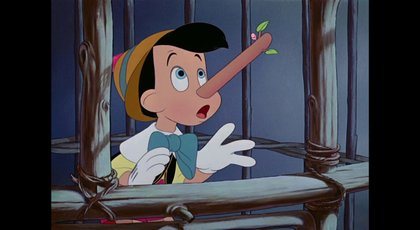

Pinokyo

Bir varmış, bir yokmuş. Evvel zaman içinde kalbur saman içinde, bütün geçimini oyuncak yapıp satarak sağlayan
Gepetto Usta adında yaşlı bir oyuncakçı varmış. Bu oyuncakçının hayattaki en büyük isteği bir çocuğunun olmasıymış ama çocuğu yokmuş.
Gepetto Usta, bir gün ormana gidip kütük kesmiş. Sonra bu kütüğü evine getirip, bir kukla yapmaya başlamış. Kuklayı bitirince bir sandalyeye oturtup,
etrafı temizlemeye koyulmuş. Birden “merhaba” diye bir ses duymuş. Etrafına bakınmış fakat kimseyi görememiş. Yanlış duyduğunu düşünüp etrafı
temizlemeye devam etmiş. Tam o sırada sandalyede oturan kukla, odanın ortasında dans etmeye başlamasın mı? Gepetto Usta çok şaşırmış. Bu kukla,
tıpkı normal bir çocuk gibi gülüyor, konuşuyor ve dans ediyormuş. Gepetto Usta buna çok sevinmiş ve ”artık benim de bir oğlum oldu” diye düşünmüş.
Kuklanın adını ise Pinokyo koymuş.
Pinokyo ve Gepetto Usta birlikte yaşayıp giderken bir gün Pinokyo’nun artık okula gitme zamanı gelmiş. Gepetto Usta, cebindeki bir miktar parayı Pinokyo’ya vererek:
“Oğlum bu paraları al, bunlarla kendine defter-kalem alıp okula git” demiş. Pinokyo, paraları alıp neşe içinde yola koyulmuş. Yolda yürüdüğü esnada gözü bir çadıra ilişmiş.
Bu bir sirk çadırıymış. Çadırın önünde bir palyaço bağırarak müşteri toplamaya çalışıyormuş. Pinokyo, çadıra yaklaşarak içeriye girmeye çalışmış; fakat palyaço
onu engellemiş ve para vermeden içeriye giremezsin demiş. Pinokyo da çadırın içerisinde ne olduğunu çok merak ettiği için elindeki paraları palyaçoya uzatmış.
Çadıra girdiğinde sahnede kendisine benzeyen bir sürü kuklanın oynadığını görmüş ve hemen yanlarına gitmiş. Fakat bunlar ipli kuklaymış ve sirk sahibi
tarafından yukarıdan ipleri ile oynatılıyormuş. İzleyiciler, Pinokyo’ya kızmışlar ve “görüntüyü engelliyorsun oradan çekil” diye bağırmışlar.
Fakat sirk sahibi, onu görünce çok sevinmiş ve kendi kendine “hareket edebilen canlı bir kukla, bana çok para kazandırabilir” diye düşünmüş.
Gösteri bitince de Pinokyo’yu yakalayarak bir kafese kapatmış. Pinokyo, babasının sözünü dinlemediği için çok pişmanmış ve kafeste üzüntüye ağlıyormuş.
Onun gerçekten pişman olduğunu gören bir iyilik perisi onu kafesten kurtarmaya karar vermiş. Onu kurtardıktan sonra da, sirk sahibine verdiği paraları
ona geri vererek; “bu paralarla defter-kalem alıp doğruca okuluna git” demiş. Pinokyo, paralar elinde şarkılar söyleyerek yoluna devam etmiş. Onu gören
tilki ile kedi yanına yaklaşıp “böyle mutlu mutlu nereye gidiyorsun Pinokyo ?“ diye sormuşlar. Pinokyo da elindeki paraları göstererek “bunlarla defter-kalem
alıp okula gideceğim” demiş. Tilki ise paraları Pinokyo’dan almak için, hemen bir plan yapmış. “Okula gidip de ne yapacaksın? Sen o paraları bize ver.
Biz de paraları sihirli tarlaya ekelim. Sonra tarlada çıkan sihirli ağaçtan, dilediğin kadar para toplayıp dilediğin zaman harcayabilirsin.”
diyerek Pinokyo’yu kandırmaya çalışmış. Pinokyo da ona inanarak paraları vermış. Tilki ve kedi paraları alarak hemen oradan uzaklaşmışlar.
Tam o sırada Pinokyo’nun yanında iyilik perisi belirivermiş. Pinokyo’ya paraları ne yaptığını sormuş. “Bana sakın yalan söyleme, yoksa seni cezalandırırım” diye de eklemiş.
Pinokyo, “paralarla defter kalem alıp okula bıraktım. Şimdi de geri dönüyorum.” diye yalan söylemiş. Sonra üst üste yalanlar söylemeye devam etmiş.
O, her yalan söylediğinde burnu gittikçe uzuyormuş. En sonunda burnu o kadar uzamış ki; artık başını dahi hareket ettiremez hale gelmiş.
Sonunda yaptığı hatayı anlamış ve iyilik perisine doğruyu anlatmış. İyilik perisi de onun burnunu eski haline getirmiş. Sonra da kedi ile tilkinin
ondan aldığı paraları geri vermiş ve “şimdi doğruca okuluna git” demiş.
Pinokyo, yoluna devam ederken birden sirk sahibiyle karşılaşmış. Sirk sahibi kafesten kaçtığı için Pinokyo’ya çok kızgınmış. Onu yakaladığı gibi denize fırlatmış.
Pinokyo, tahtadan yapıldığı için suya batmıyormuş ve denizde rahatlıkla yüzebiliyormuş. Bu onun çok hoşuna gitmiş ve denizde yüzmeye başlamış.
Tam o sırada kocaman bir balık gelmiş ve onu yutuvermiş. Pinokyo, balığın karanlık midesinde ağlıyormuş. Babasının sözünü dinlemediği için
çok pişmanmış ve “keşke babamın sözünü dinleseydim, bunlar başıma gelmezdi.” diyormuş.
Öte yandan Pinokyo eve dönmeyince, Gepetto Usta onu çok merak etmiş ve etraftan sirk sahibi tarafından denize atıldığını öğrenmiş.
Hemen deniz kenarına gelmiş ve balıkçılardan yardım istemiş. Gepetto Usta’nın ne kadar iyi kalpli bir insan olduğunu bilen balıkçılardan biri
onu kayığına alıp denize açılmış. Birlikte Pinokyo’yu aramaya başlamışlar. Tam o sırada şiddetli bir fırtına çıkmış ve kayığı paramparça etmiş.
Balıkçı ve Gepetto Usta denize düşmüşler. Gepetto Usta, yüzme bilmediği için hızla denizin dibine doğru batmaya başlamış. Tam o sırada Pinokyo’yu
yutan balık Gepetto Usta’yı da yutmuş. Gepetto Usta ve Pinokyo balığın midesinde karşılaşmışlar. Pinokyo, ağlayarak onun boynuna sarılmış ve sözünden
çıktığı için çok pişman olduğunu söylemiş. Pinokyo’nun gerçekten de çok pişman olduğunu gören iyilik perisi, onları balığının karnından kurtarmış.
Pinokyo, bundan sonra, her gün okuluna gidip gelmiş ve okuldan döndükten sonra da babasına yardım etmiş. Onun ne kadar iyi kalpli bir çocuk olduğunu
gören iyilik perisi, onu ödüllendirmeye karar vermiş. Ve bir gece Pinokyo uyumadan önce, onu etten kemikten gerçek bir çocuğa dönüştürmüş.
Pinokyo, bu durumu fark edince çok sevinmiş ve mutlulukla babasının yanına koşmuş. Gepetto Usta, onu bu halde görünce çok mutlu olmuş ve artık
“benim de gerçek bir çocuğum var” diyerek havalara uçmuş. İkisi birlikte hayatlarının sonuna dek mutlulukla yaşamışlar.